How Spire, a first-person climbing game, is being made, day by day, with pictures. Newest first. Last entry: Saturday 31 October 2026.
Saturday 31 October 2026
Round rungs and wet steel
The ladder rungs were plain orange tubes pushed through the rails. Now they're real round steel bars welded into the rails, worn bright where hands and feet go and rusted at the ends. The wet steel on the way up used to have grey balls stuck to it; now it shows it's wet by its shine, with a single drop that swells and falls every few seconds.
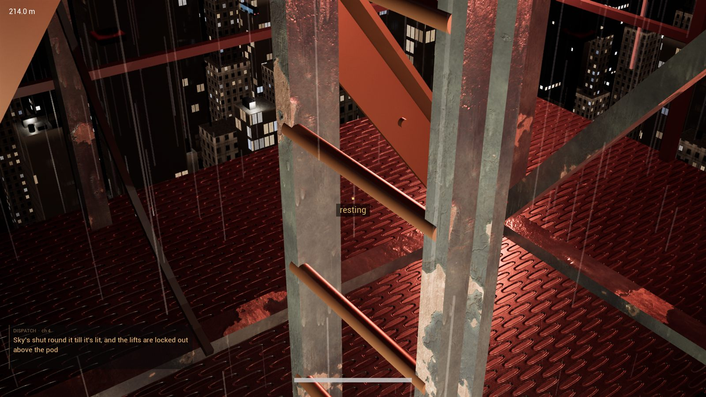
Before: the mast's rungs were plain orange tubes pushed through the rails. 214 m, the mast's ladder
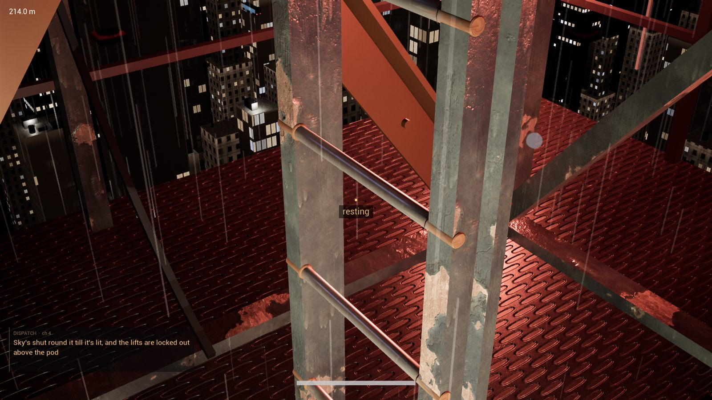
And now: round steel bars welded into the rails, worn bright in the middle. 214 m, the mast's ladder
Anchors up the lower tower, and one way in
The rope now has anchors to clip all the way up the lower tower too, and the eyebolt by the drainpipe near the start is now in reach from the pipe. Riding the lift, I can no longer grab a window track and get pulled off it. The open-sided floor and the recess on the way up each have one gap in their railing, the only way in and out, so I know where to climb in and where to lower off. The chiller's warning, a wet streak on the wall and a heat haze, now shows from the way up, and the plant room's power run reads as one run along the wall.
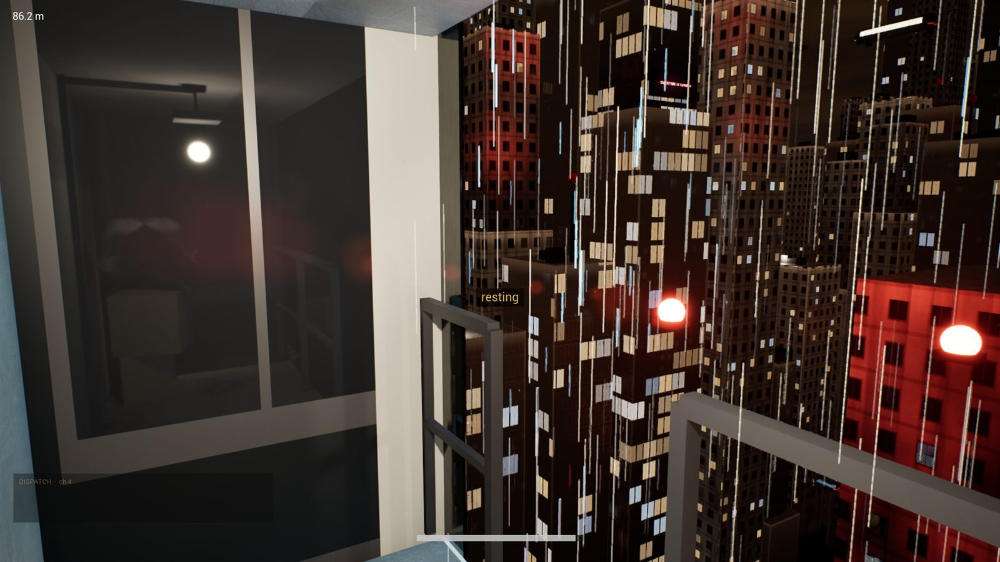
Before: the recess was railed off on both sides, with nothing saying where to climb in. 86 m, the recess above the plant room
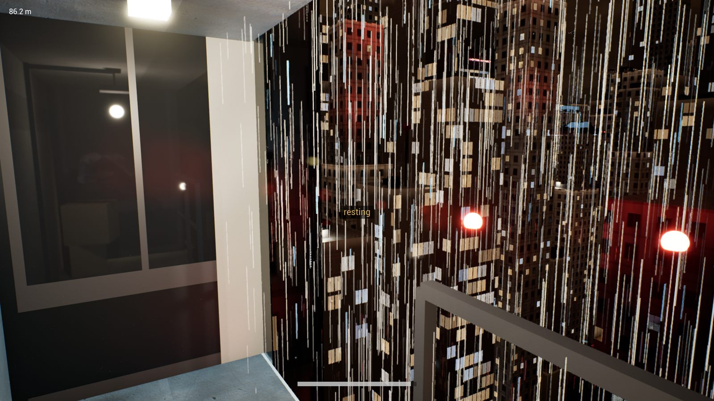
And now: one gap in the railing, the only way in and out. 86 m, the recess above the plant room
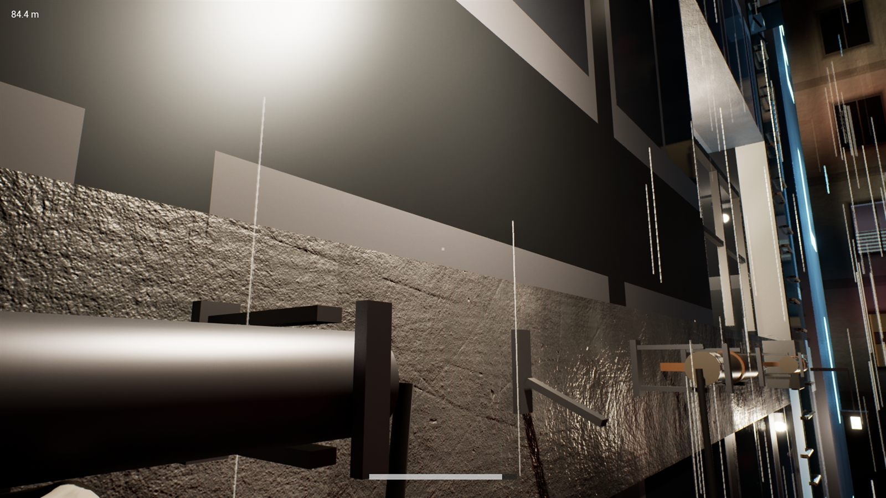
The plant room's power run, torn in places, reading as one run along the wall. 84 m, the plant room's power run
Finding my street from the top
In my playtest I couldn't find the street I'd started on from the top of the mast, and some of the streets below were dark. The start street was only lit near the tower; now it's lit all the way along, with lamps, shops and cars, so from the top it reads as a line of light running away from the tower. The other streets below carry a little more light up through the smog.
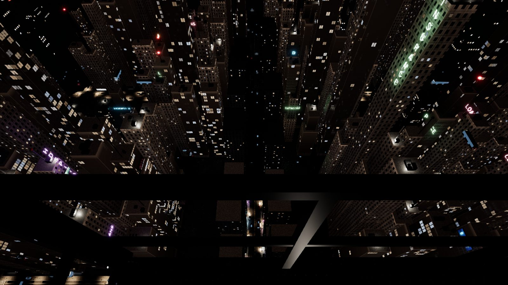
Before: from the mast top, the start street was a black slot. 240 m, the mast top
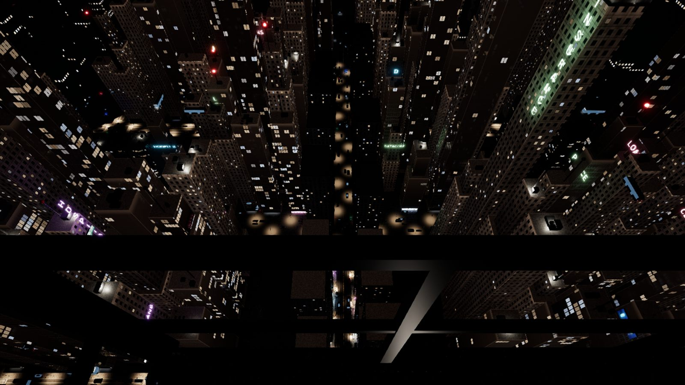
And now: the start street, a line of lamps and cars running away from the tower. 240 m, the mast top
Anchors to the top, and a solid mast ladder
The rope now has anchors to clip all the way up the upper tower: eyebolts on the sign's letters, by the conduit and on the mast's steel, and slings round a ladder and a railing. The mast's ladder rails are solid now, so I can't climb through them. The lamp for the jump back onto the broken mast ladder hangs on my side now, lighting the rungs I'm aiming for. And the back terrace below the roof is now a camp, splitting a long, tiring stretch in two.
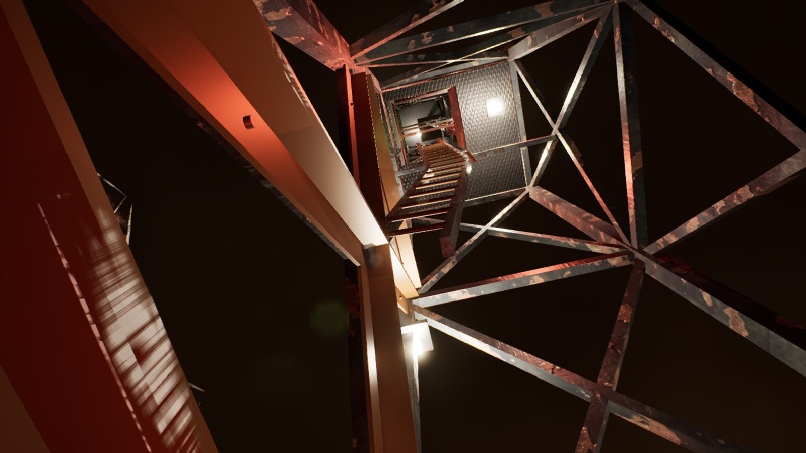
Before: from the brace I jump from, the lamp behind the hanging ladder left its rungs dark. 222 m, the mast's east brace
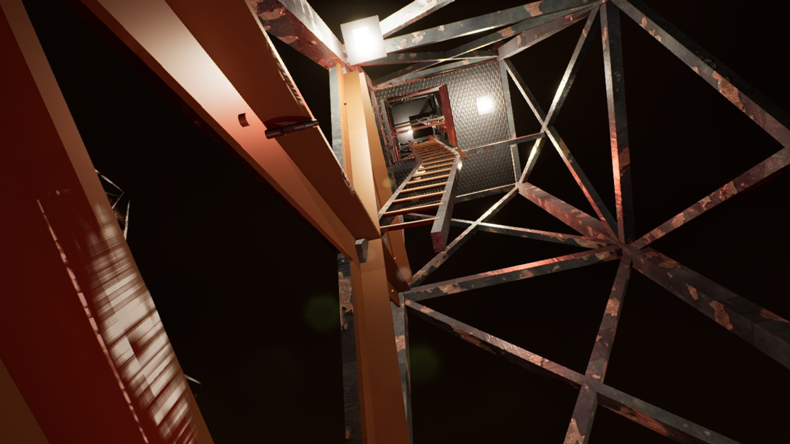
And now: the lamp hangs on my side, lighting the rungs I'm aiming for. 222 m, the mast's east brace
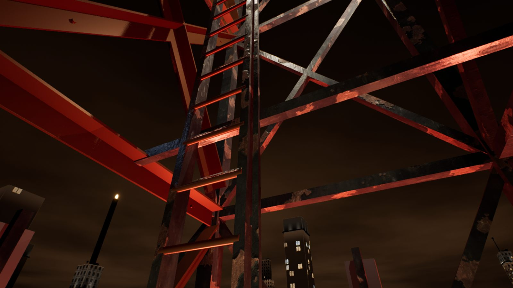
The mast's ladder, its rails now solid steel. the mast, looking up the ladder
The light changes as I climb
The colour of the picture now shifts with height: warmer in the street's smog, cooler and crisper above it, and cool and clear at the top. The lens flare is gone.
Before: the view out from the mast top. 240 m, the mast topAnd now: cooler and clearer above the cloud. 240 m, the mast top
Seeing through the rain up the tower
Up the tower the rain was a white curtain: on the podium roof I could barely see the lift. Now I can see through it, and it still reads as heavy rain. The street's rain is unchanged.
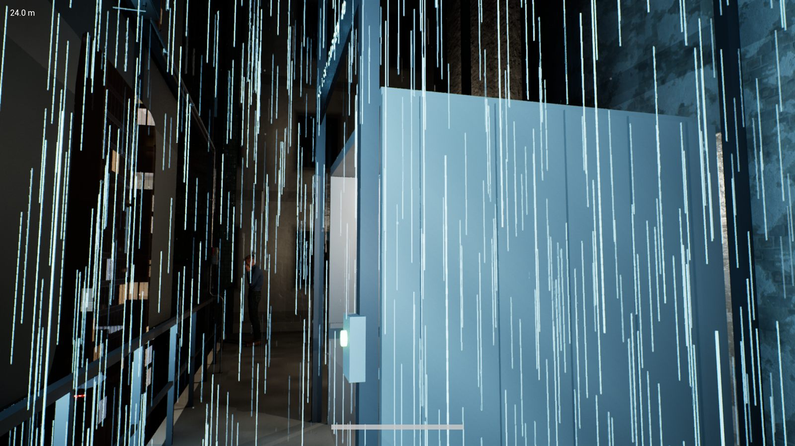
Before: on the podium roof, the rain was a white curtain in front of the lift. 24 m, the podium roof by the lift
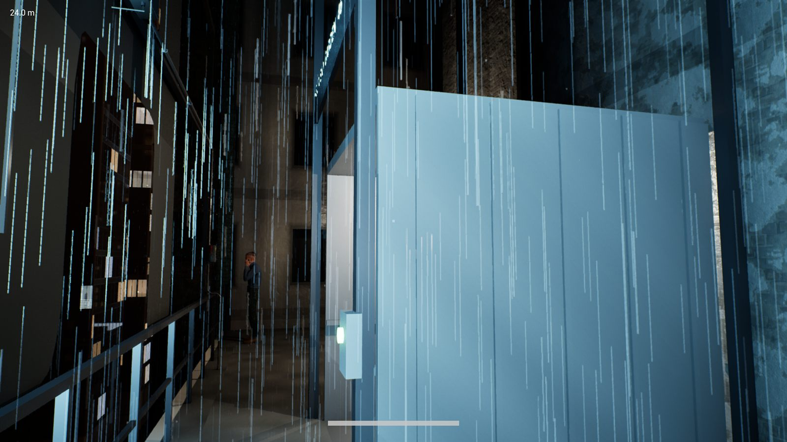
And now: the lift, the wall and the man on the phone through the rain. 24 m, the podium roof by the lift
A railway into the container yard
The container yard you can see from the mast top now has a reason to be there: two loading tracks under its cranes with a train of container wagons standing at the buffers, and a double track leaving between the towers, over two level crossings with their barriers, into a tunnel under a tower.
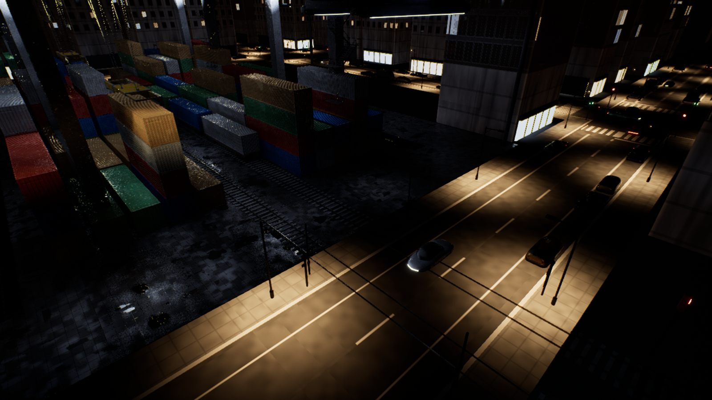
The line out of the yard, past the crossing's warning posts and across the road. seen from above the yardThe yard close up: the train under the cranes. seen from above the yard
Signs fixed to the buildings
The street's signs were neon words floating in front of the walls. Now each is hardware fixed to its building, the first step of the new sign kit: the shop signs stand on a raceway or a backer panel with a transformer beside it, every one is fed by conduit on clips to a red-handled switch and into the wall, and rust runs down from the fixings. The blade signs are rebuilt as real projecting signs, hung from an arm and a tie rod, and the BAR blade has moved over the Soma Bar where the bar actually is. The HELIX letters on the podium roof get a transformer each and a run of conduit to a switch above the railing.
Before: the HOTEL blade, a board flat to the wall. 0 m, the street at the startAnd now: a projecting sign on an arm and a tie rod. 0 m, the street at the start
A shop sign on its raceway, the conduit running to its switch. 0 m, the street at the start
Friday 30 October 2026
Real people instead of mannequins
Everyone on the street, on the podium roof and in the shops was the same smooth template mannequin with clothes painted on: no faces, joints showing. Now they're real people from Epic's City Sample crowd: nine different people with their own faces, hair, skin and clothes, walking at the pace their stride sets. Those without an umbrella hurry through the rain, and the man on the roof makes a real phone call. The climber's own gloved hands stay as they were until the climber's gear is redesigned.
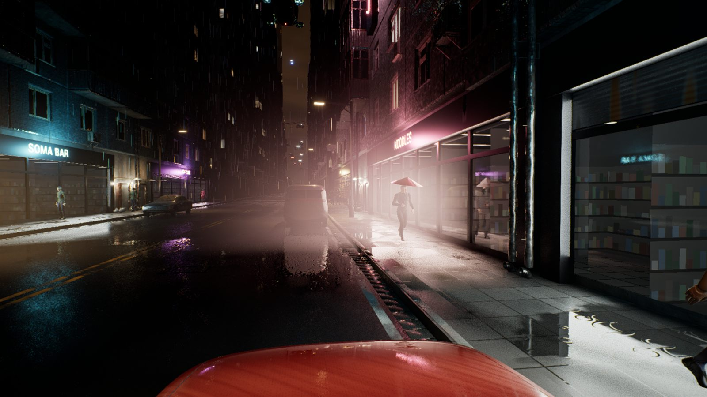
Before: the street's people were mannequins with clothes painted on. 0 m, the street at the startAnd now: a real person hurrying past the 24-hour shop, no umbrella. 0 m, the street at the start
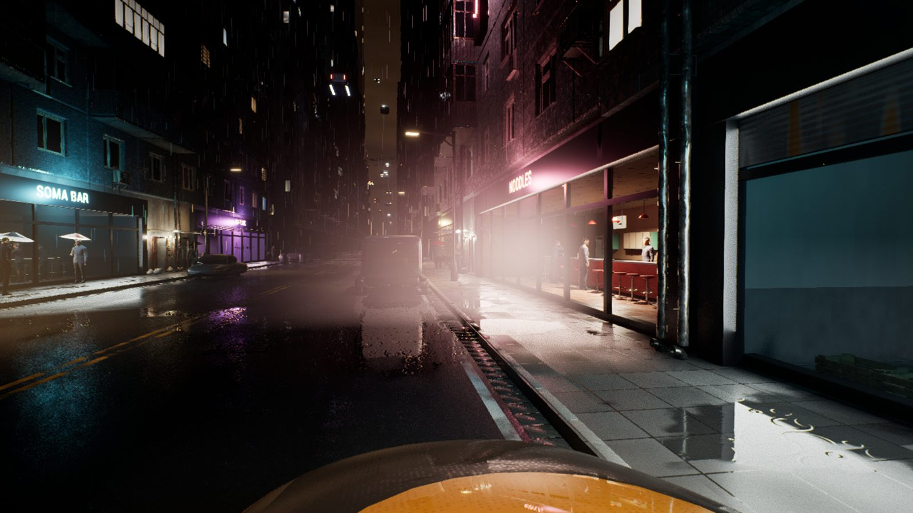
People in the noodle bar and along the street. 0 m, the street at the start
Parked flying cars, and a new flying fleet
The cars at the kerbs were wheeled cars from an old idea of the future, and the traffic overhead flew on jets. Now every car is a flying car that has landed: six new designs (a commuter, a patrol car, an executive saloon, a delivery van, a cab and a coupe), drawn first as mockups and built from them, sitting low on pads, runners and skids with their lift plates dark. In the air the same cars fly with the part underneath turned to show their plates, glowing softly, no jets anywhere, alongside a new city bus. The traffic is a realistic mix: mostly commuters and delivery vans, cabs (most with a passenger, so their roof light is off), a few executives and coupes, and police in the high lanes with their light bars.
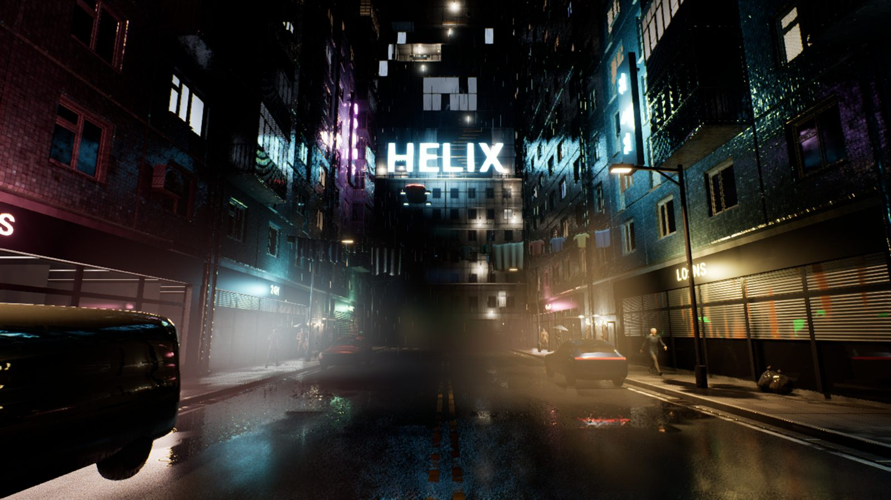
Before: wheeled cars from an old idea of the future along the street. 0 m, the street at the start
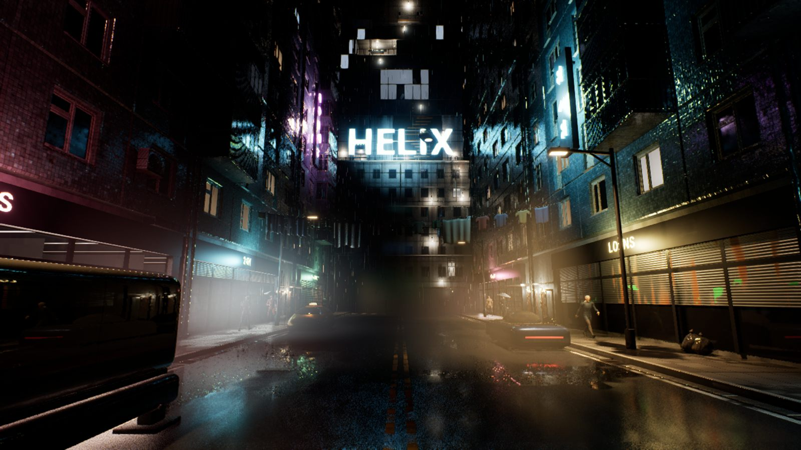
And now: parked flying cars at the kerbs, sitting low on their pads. 0 m, the street at the start
The cab waiting at the rank, its roof light on: for hire. 0 m, the street at the start
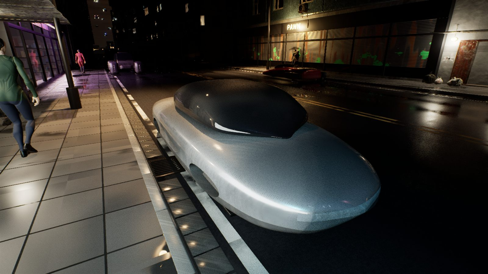
The executive saloon parked by the kerb. 0 m, the street at the start
The old town by day
The first job happens by day in the old town, and the street there was too dark: the deep canyon between the buildings kept the sky's light out, the scaffold was a black wall, the roads were wet with puddles on a dry day, and every window was a black hole. Now a little daylight reaches the street, so the tenement and its scaffold read in an overcast day; the roads are dry and sound like concrete underfoot; the windows show the rooms behind them, with curtains and blinds; and the towers fade smoothly into the low cloud. The night street is unchanged.
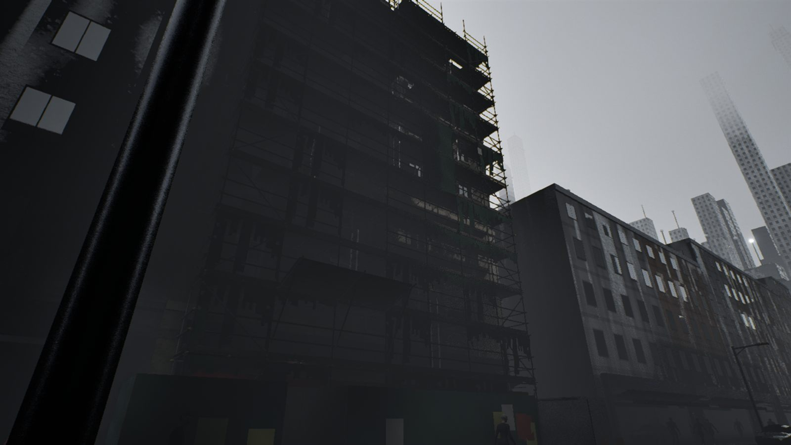
Before: by day the scaffold was a black wall over a dim street. the old town, across from the scaffold
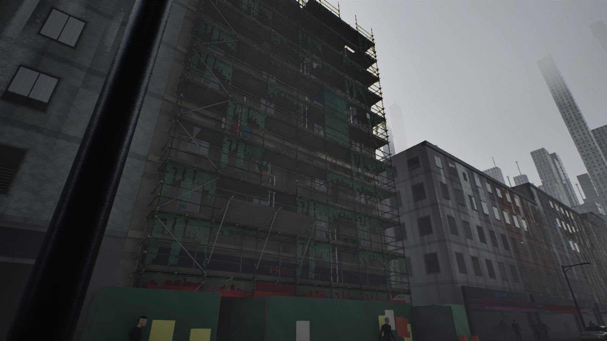
And now: the tenement, its scaffold and netting in daylight, on a dry road. the old town, across from the scaffold
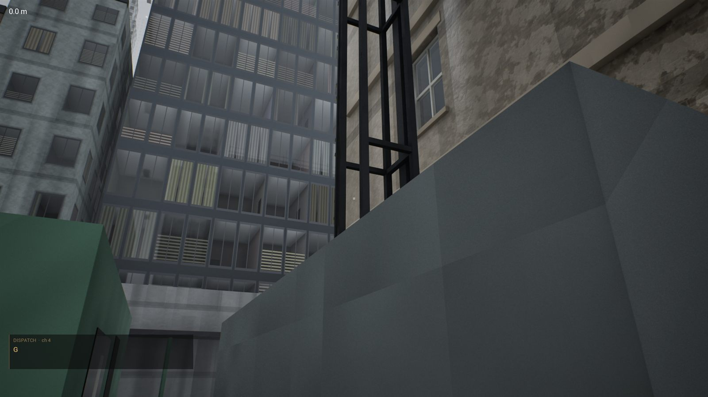
The office tower at the arrival: rooms, curtains and blinds behind its windows by day. the old town, the arrival
Real rooms behind the shop windows
The shops along the street were flat painted pictures behind their glass. Now the noodle bar, the ramen shop, the 24-hour shop and the bar have real rooms you can see into from the pavement: counters and bar stools, shelves of stock and drinks fridges, back shelves of bottles, pendant lamps and tube lights you can see, and a few people inside. The karaoke place is frosted glass lit from behind, with a small lobby by the door: the host at the desk and the lyrics on a screen.
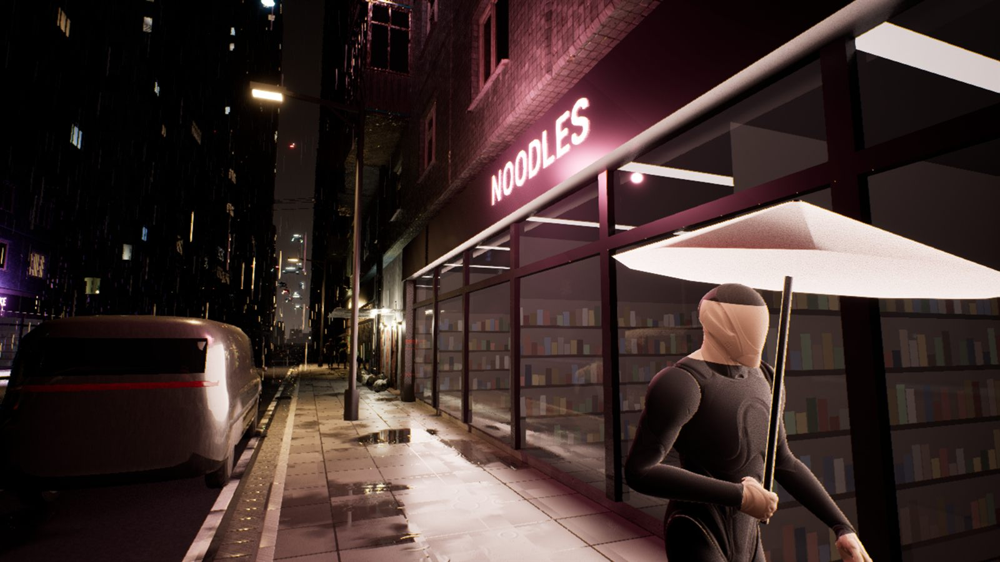
Before: the shops were pictures painted behind the glass. 0 m, the street at the startAnd now: the noodle bar's room, its counter, stools and lamps. 0 m, the street at the start
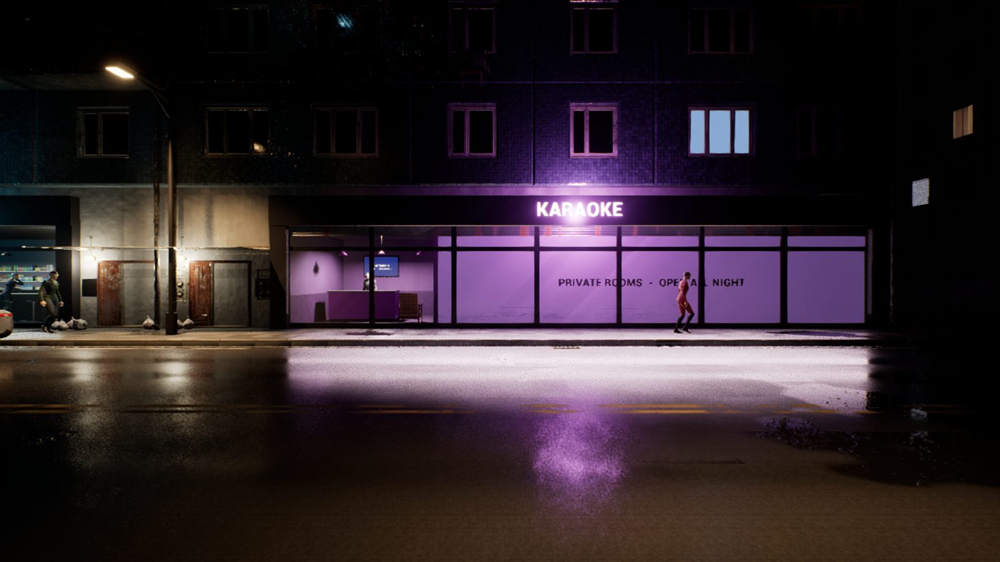
The karaoke place from across the street: frosted glass and a small lit lobby. 0 m, the street at the start
The plant floors' conduit: one real power run
Above the plant room, the way up to the recess was three short pipes that started and ended in the glass: holds, not anything a building would have. Now they're one power run. It leaves a gland on the plant room's roof, climbs the wall, turns at an elbow and runs along under the recess to the junction box that feeds the recess's lamp. The level stretch has been ripped off in two places, its saddles bent open and the cable cut and hanging, so the two jumps cross where the pipe is missing.
The step irons up the riser are at real spacing now, and halfway up the long ladder there's a rest platform on its bracket. With more irons in reach, the ladder to the terrace is a little less tiring.
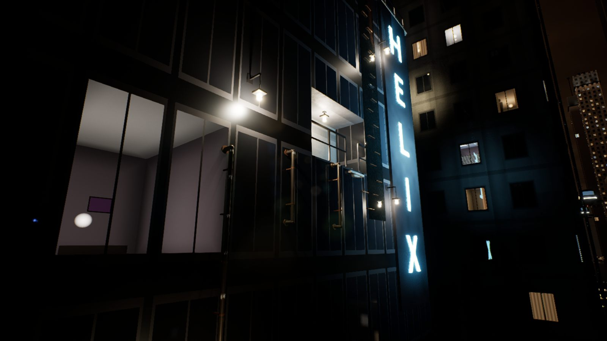
Before: three short pipes on the glass, starting and ending in nothing. 85 m, above the plant room
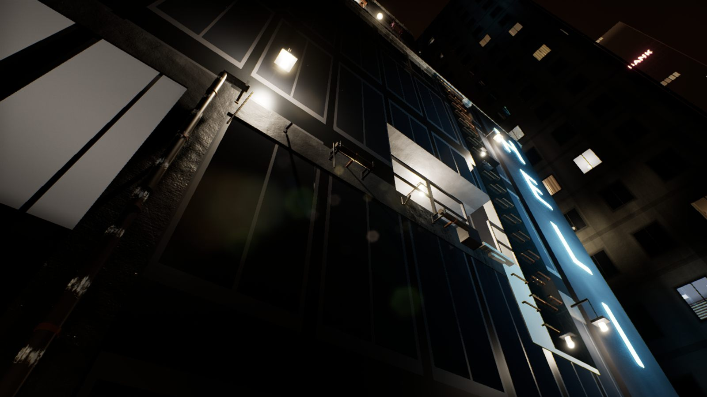
After: from the plant room's roof, the power run up the wall and along under the recess to its lamp. 81 m, the plant room's roof
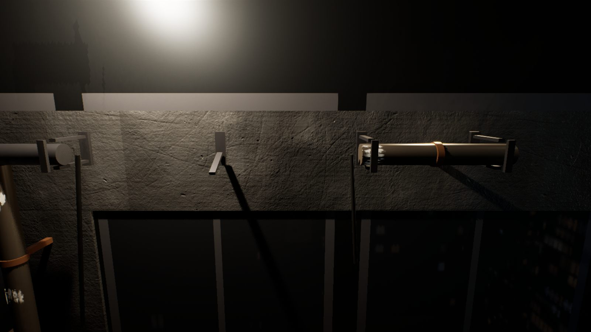
Where it's been ripped off: an empty saddle bent open, the cut cable hanging, the surviving length still clamped at its torn end. 86 m, under the recess
The mast's jump you can see
Past the torn ladder on the mast, the old way on was a leap you couldn't see: you had to turn round to find where you were jumping. I called it "not fair". Now you hop left onto the side of the mast's steel frame, climb its cross-bracing a little, and jump straight up onto the torn-off ladder section, which has swung round on its last bolt so its foot rests against that bracing. Both moves are in front of you.
A safety rail now runs up each ladder flight, torn with the broken flight, its ends bent either side of the gap. Clipping a rope onto it comes later.
The two short hops are a little easier than the old turn-round leap, so that stretch is a bit less tiring.
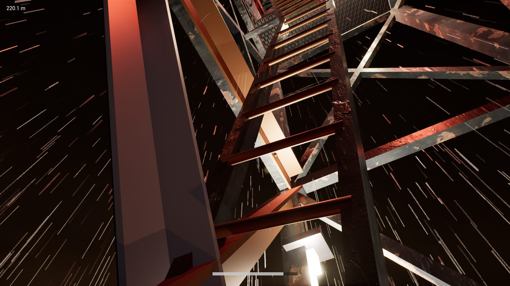
Hanging on the side of the mast's frame, looking up: the torn-off ladder section's rungs just above and to the right, the jump you can see. 221 m, the mast's torn ladder
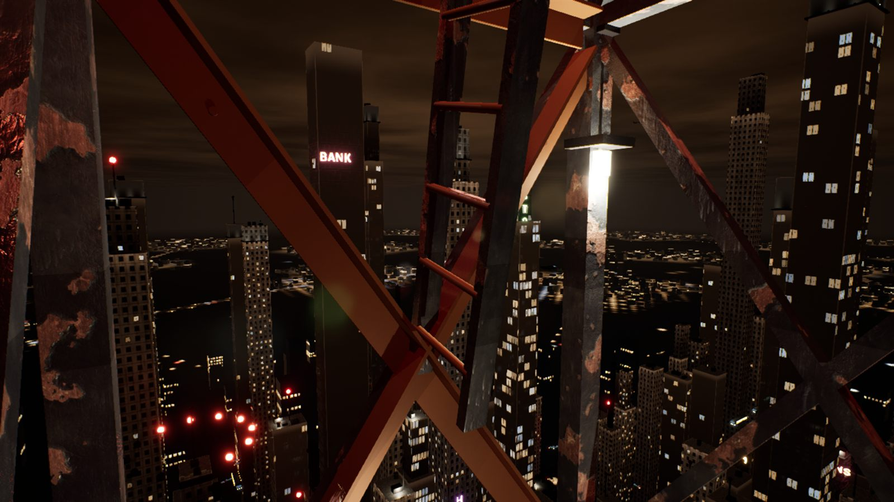
The torn-off ladder section, swung round on its last bolt, its foot resting where the frame's cross-bracing meets. 219 m, the mast's torn ladder
The sky garden's glass: only the window cleaners' tracks to climb
On the sky garden's glass wall you could climb straight up any of the metal strips between the panes, right past the open-sided floor, where the climb is meant to make you stop and think. Now the strips are flat caps you can't hold. Only the cleaning cradle's guide tracks can be gripped: every third strip, a bright metal channel among the dark ones, and they stop at a plate just under the open-sided floor. So the way on is that floor, and lowering yourself off it onto the track beside the gondola.
The louvres at the bottom now run wall to wall on two supports and a steel rail across the middle, storm-damaged: blades missing, others slipped onto the ones below, so you pick your line up the gaps.
By the gondola you climb its guide track, not its wire ropes. It's a little harder than the rope was, so that stretch is a bit more tiring.
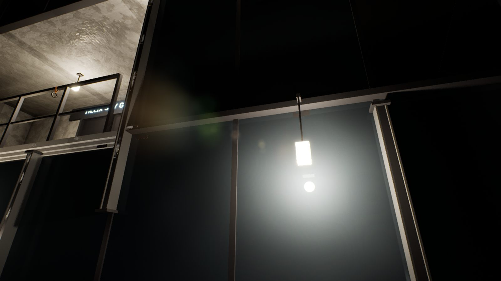
Under the open-sided floor: the two tracks end at their stop plates, a work lamp lighting them, the dark strips between you can't hold. 45 m, under the sky garden's open-sided floor
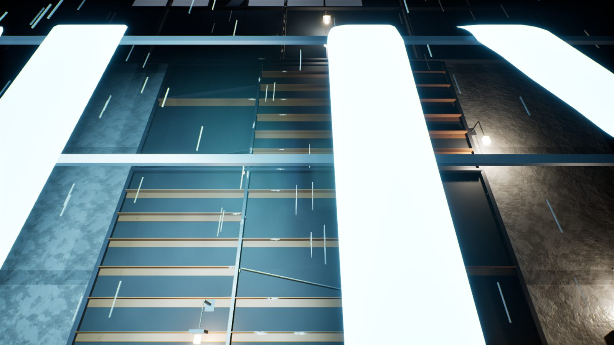
The louvres from the podium roof: blades wall to wall on two supports and a rail across, some slipped down onto the ones below. 24 m, the podium roof
Job 1: the scaffold, by day
The first job of the run now has its own map: a six-storey tenement under repair in the old town, by day, wrapped in scaffolding. From the site gate there are two ways up: the ladders inside the scaffold, bay to bay through the hatches, or straight up the frame outside, pole and bar. The crew's tea spot halfway up and the roof are the camps, with no lanterns (it's daytime, and builders don't leave one). On the roof you reset the site's power board, which relights the hoist's lamp, and you ride the hoist down to the street. There's no stamina bar on this job: you go by how the climber looks and sounds.
It's built from new pieces meant to make later buildings faster: a parts library, ready-made climb chunks (a ladder bay, a lower-off, a stretch of frame) and a facade generator that builds a whole old building's front, windows, sills and parapets, from a few numbers.
Getting back onto the boards from the frame used to get you stuck under the deck; now only the bays with their rail off let you in and out.
At the site gate, looking up: the scaffold wrapped round the tenement, its netting torn, the frame and the boards both ways up. Street level, the old town
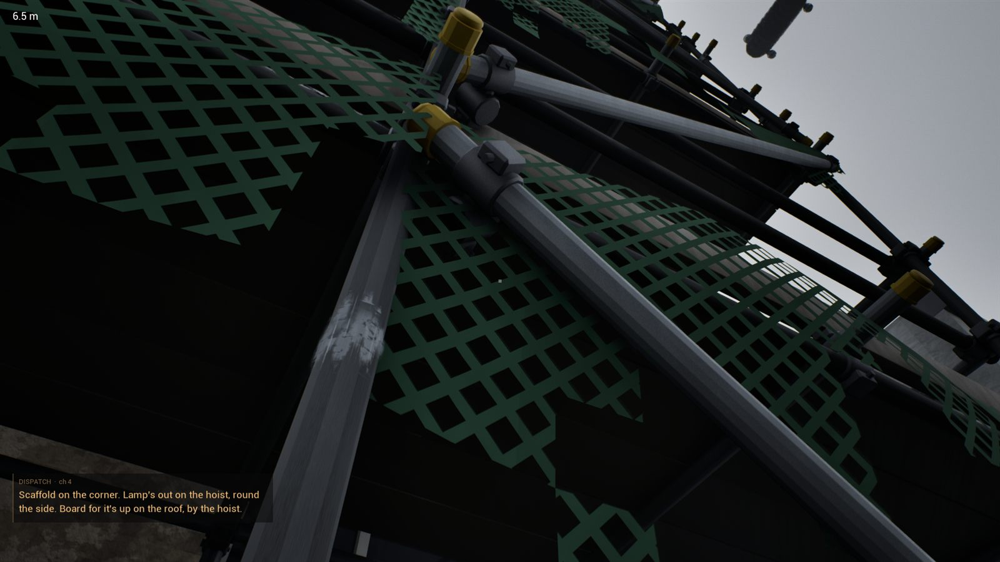
Up the outside of the scaffold: the poles rubbed bright where the crew's hands went, the torn netting. The scaffold's frame, the old town
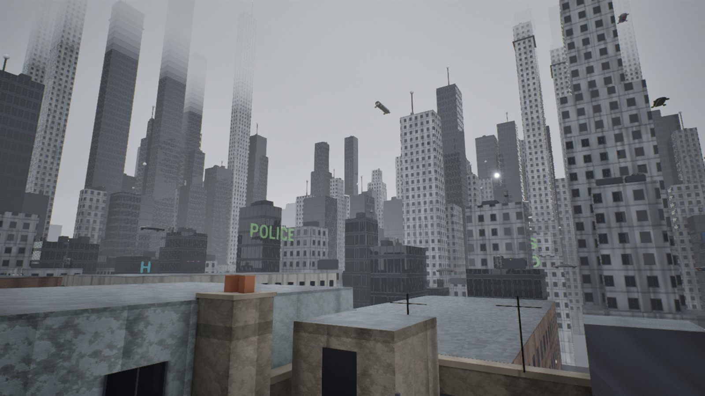
On the roof, the second camp: chimneys and the stair hut, and the city beyond by day. The tenement's roof, the old town
The Sky Bar's corner is failing cladding, not corner stones
My note was that the cracked corner stones on the Sky Bar's tower felt out of place: random blocks stuck on a modern tower. Now the tower is a concrete block clad in big precast panels, the way a real one would be. On the corner you climb they're failing: cracked and coming away from the wall at the top, and they crumble under you; where one has already fallen, the steel rail it hung on is left, and that's the hold. Above, the stack of odd ledges and lips is gone: the drainpipes now come down from real hoppers (one under an outlet through the wall, one under the terrace's overflow), rusted through at the bottom, and the old shelf is the rail a hanging sign once hung from.
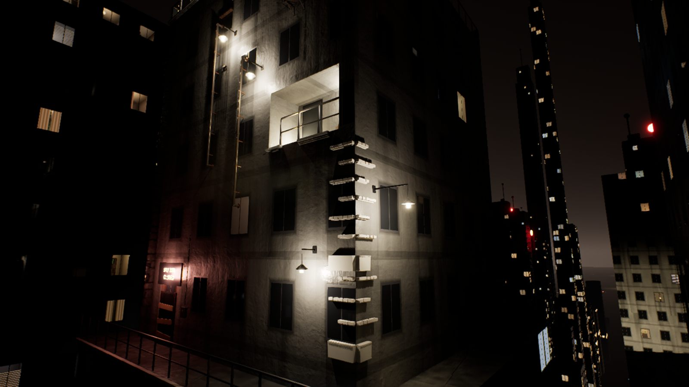
Before: the corner of stacked, cracked stones. 96 m, the Sky Bar's corner
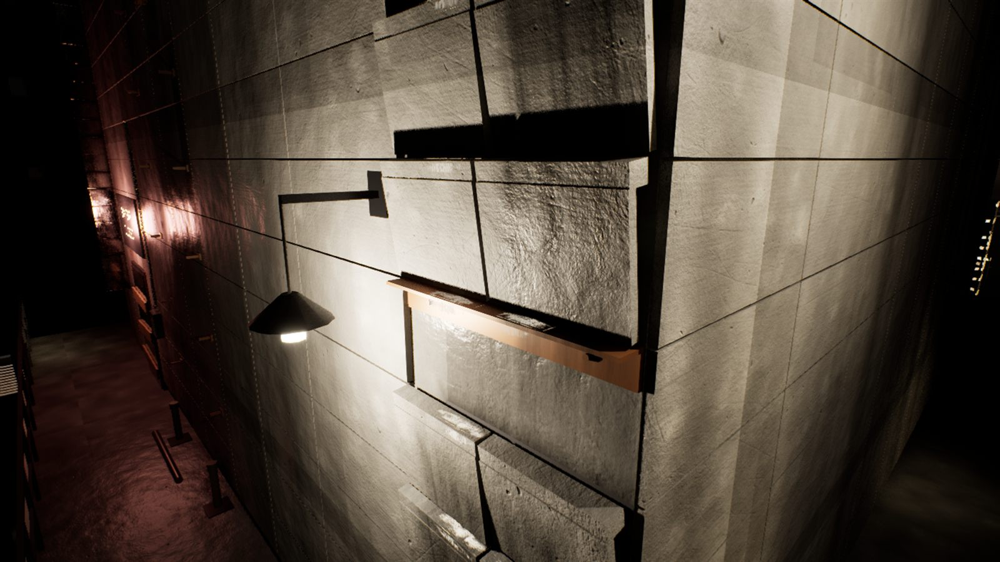
And now: precast panels cracked and leaning off the wall, and a fallen one's bare steel rail to grab. 96 m, the Sky Bar's corner
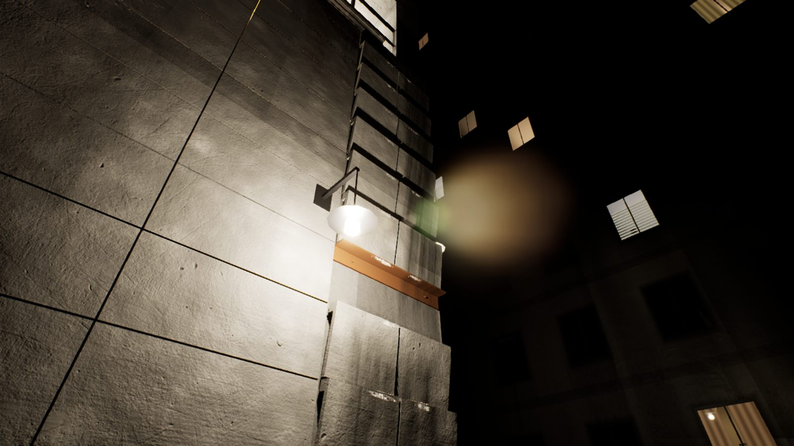
The failing corner as you walk up to it from the terrace. 96 m, the Sky Bar's terrace
Clipping in is a choice now
Clipping the rope to an anchor used to be a quick tap. Now it takes a deliberate two and a half seconds you can see: your free hand goes to your harness, draws a quickdraw, snaps it onto the anchor, pulls up rope and snaps that in, while you hang off the other hand and tire twice as fast. Let go before the rope snaps in and you fall unclipped. The quickdraw stays hanging on the anchor with the rope running through it. Clipping in is still a trial mode, off by default.
A leap sideways under your last clip now flies free; only a real fall afterwards is caught by the rope, not the leap itself.
Roping down from the mast no longer yanks you back up towards your last clip when you land.
On the way down the rope, both hands now hold it where you can see them, one above the other.
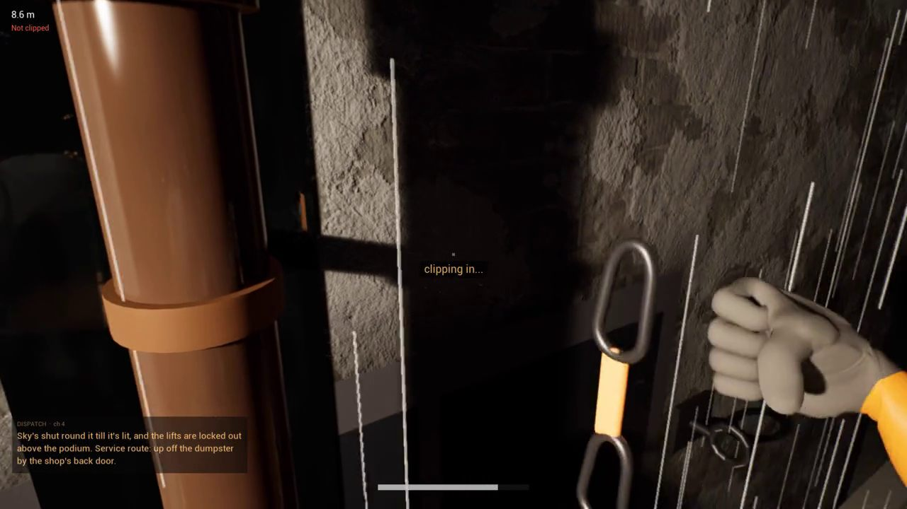
The hand brings a quickdraw up to the eyebolt beside the drainpipe. 8.6 m, the eyebolt right of the drainpipe
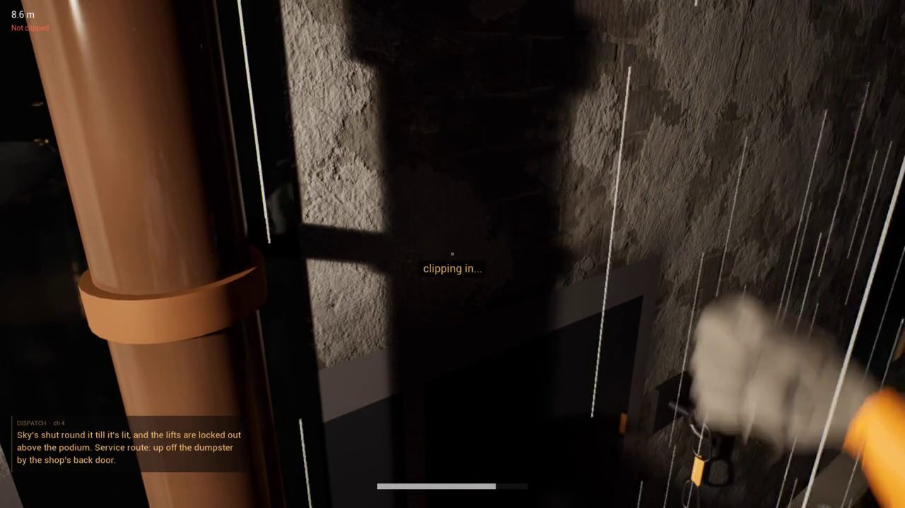
Clipping in: the quickdraw hangs on the eyebolt and the hand comes back with the rope. 8.6 m, the eyebolt right of the drainpipe
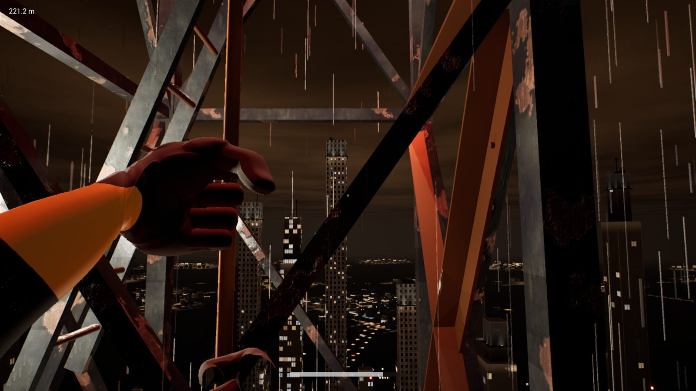
Halfway down the rope from the mast: both hands on the rope, one high, one low. 221 m, roping down the mast
From the top, the city below comes alive
Looking down from the mast, the only street with anything on it was the one where the climb starts; every other avenue was a dark slot between the towers. Now the avenues all have street lamps, lit shopfronts, cars parked along the kerbs and cars moving between the signals, so the view down reads as a city still awake at night. The container yard, which hid behind a tower, has moved to where you can see it from the top, its stacks lit by floodlights, without any building changing size.
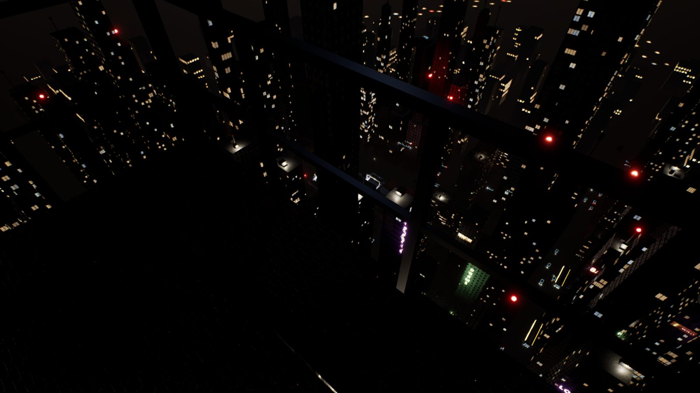
Before: from the mast, the streets below were dark slots between the towers. the mast topAnd now: lamps, shopfronts and traffic down every avenue, and the container yard lit in the middle. the mast top
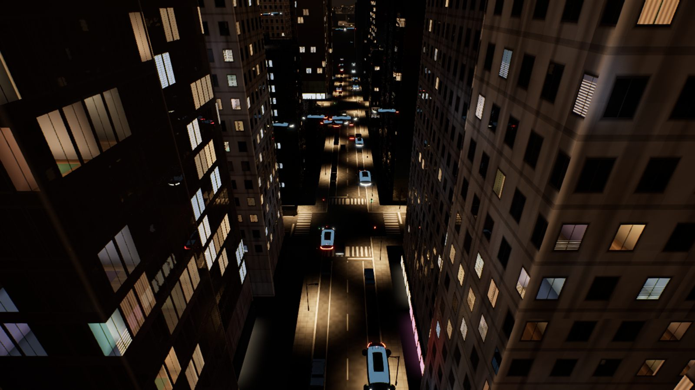
One of the avenues closer up: parked cars, lamps and lit shops.
The smoker on the podium roof stops putting his hand through his head
The two people leaning on the railing of the podium roof had their hands in the wrong places: the smoker's hand went through his face on every draw and his other hand sank into a railing post, and the man on the phone held it inside his head. Now both rest their hands on top of the rail, the smoker stands between the posts, his fingers stop just in front of his mouth, and the phone sits along the caller's cheek.
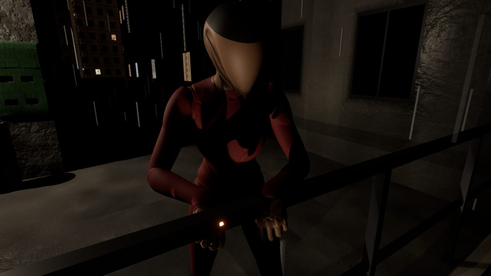
The smoker at the podium roof's railing: hands on the rail, the cigarette's glow at his fingers. 24 m, the podium roof
Rain you can see up close
The rain only showed as a haze far down the street; the air right in front of you was empty, and none of it followed you up the tower. Now a second, denser layer of rain falls all round you wherever you are on the climb: fine streaks that catch the lamps, the signs and the lit shopfronts behind them, shorten into drops coming at you when you look up, and stop under awnings and roofs. The few fat white streaks that used to hang a few metres away are gone.
The street at the start before: the rain only a far haze. 0 m, the street at the start
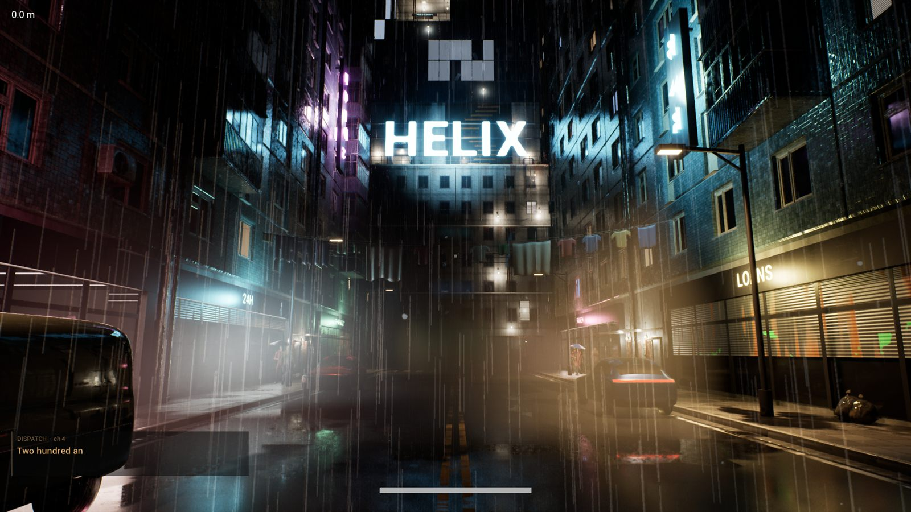
And now: streaks falling right in front of you, lit by the shopfronts and the lamp. 0 m, the street at the start
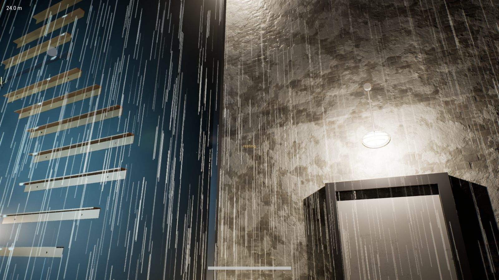
At the first camp under its lamp, rain all round you. 24 m, the first camp
Nothing floats: fixings, frames and ends for the climb's holds
An audit of every hold on the tower found things hanging in the air or vanishing into the wall. They're all fixed to something now, and not one hold moved:
The barred window at the start sits in a steel frame, with uprights behind the bars and lugs bolted back to the wall.
The rope slings wrap round the rails they hang from, instead of floating beside them.
Drainpipes start at a hopper under the roof edge and end rusted through, with old clamps left on the wall; conduits run into their boxes, not into bare wall.
The neon sign's boxes, cables and brackets stand out from the wall the right way, instead of sinking into it.
Eyebolts stuck to the middle of the glass are gone, and the window cleaners' ropes run on into hoists on the gondola.
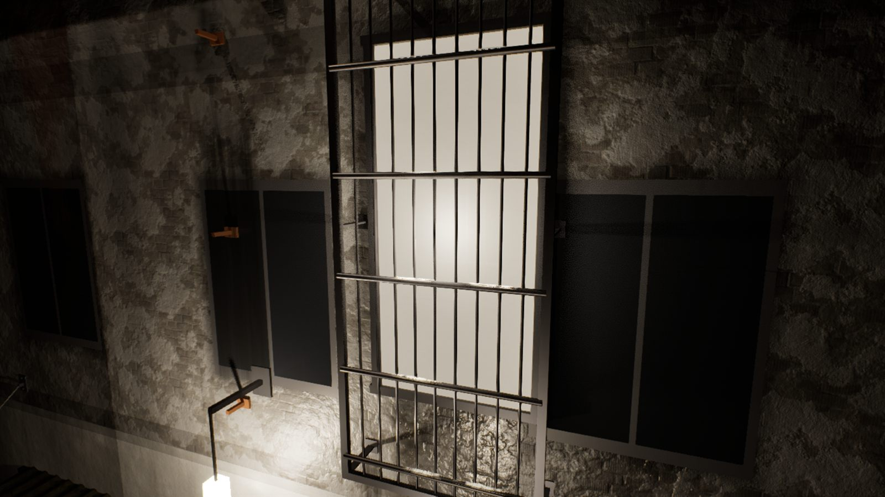
The barred window at the start, now in a steel frame with lugs bolted back to the wall. The podium, above the awning
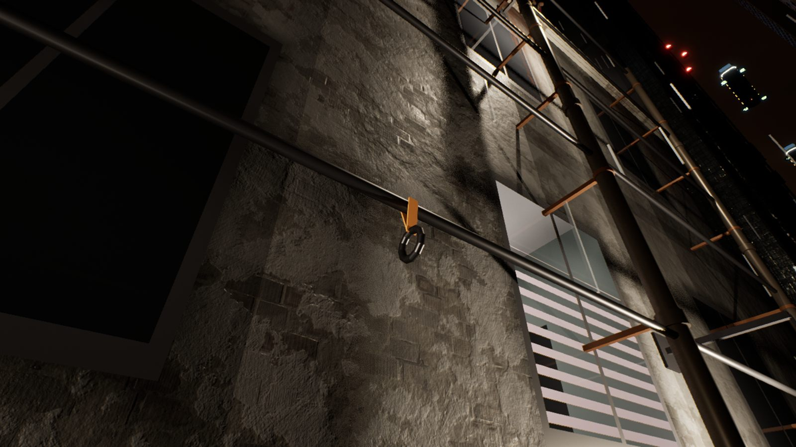
The rope sling on the podium, wrapped round the billboard frame's rail. The podium roof, the billboard frame
A real dumpster and awning where the climb starts
The climb starts up off a dumpster and onto the awning over a shop's back door. Both were plain boxes, the lowest-detail things at the foot of the tower. Now they're real:
The dumpster is a ribbed green steel bin on brake castors, with a rolled top edge, slots for the truck's forks, two hinged lids, dents, chipped paint showing rust, and rust running down from under the lid.
The awning is a steel frame bolted to the wall with tie rods and braces, under a stained roof panel that drains into a gutter at the front.
They climb exactly as before: the same edges, at the same heights.
The graffiti tags by the shop doors now stay on the wall instead of spilling across the shop windows.
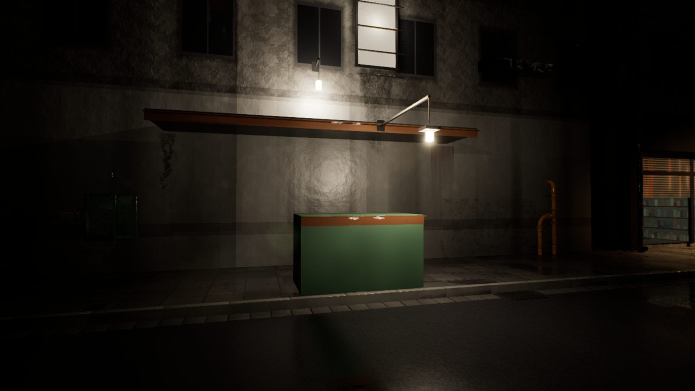
The start before: the dumpster and awning as plain boxes. 0 m, the start
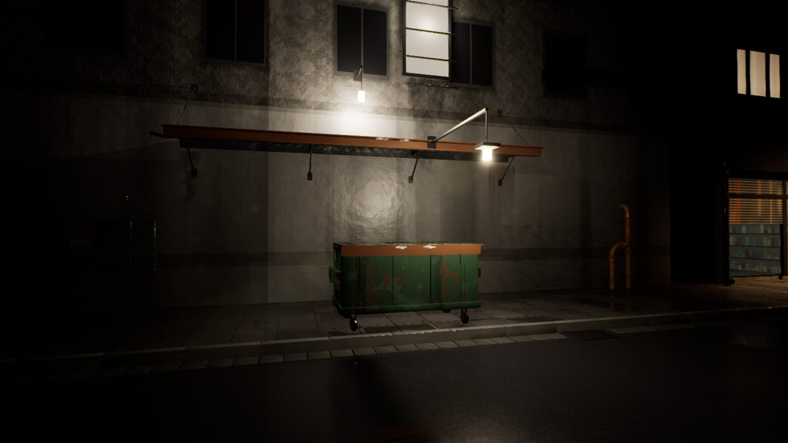
And now: a ribbed steel dumpster on castors, under a steel awning on wall brackets. 0 m, the start
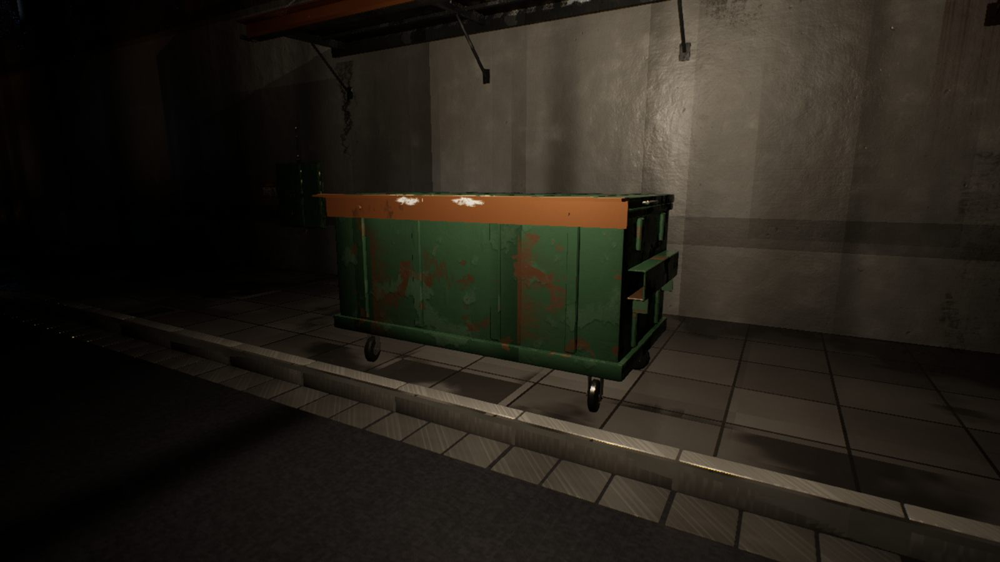
The dumpster up close from the road: castors, fork slots, the lid's lip, chipped paint and rust. 0 m, the road by the back door
The old town by day
The first job of the run gets a place of its own: an old part of the city, by day. It's a second map, built the same way as the Spire's street, with its own sky.
Each job now picks a sky. The Spire keeps its rainy night; the old town gets an overcast day, with a soft weak sun, a grey haze and a cloud deck that the city's towers fade up into.
The far city changes with it: windows unlit, neon signs as painted letters, adverts as paper posters, no roof lights.
The street itself: a narrow road between rows of five-to-seven-storey brick and render tenements with painted shop signs and awnings, a side street where the cab drops you, market stalls, parked cars and people walking.
The building you'll climb and the tower opposite are still plain stand-ins; the scaffold comes next. Still to fix: the street is dim down in the canyon, the road looks wet even by day, and the windows read as dark holes.
From the top of the old tenement: the old town's roofs, and the city's towers fading up into the cloud. 22.7 m, the tenement's top
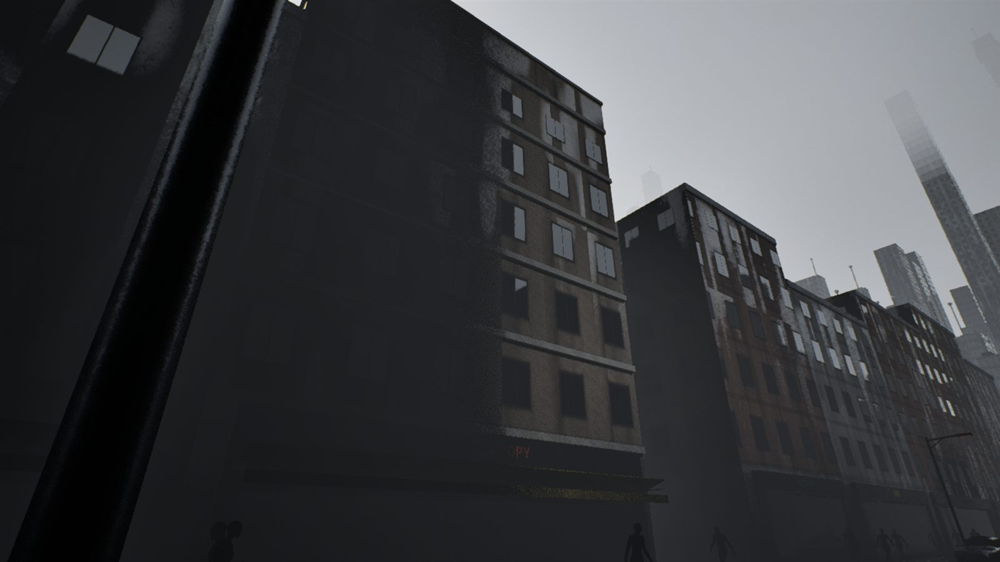
The stand-in tenement from the far pavement, the copy shop at its foot. The far pavement, the old town
The mast's broken ladder looks old
Near the top of the mast the ladder has a gap where its rungs have rusted away, and a length of it has fallen onto the antenna platform below. Both were too neat to read that way: the gap was a row of identical little cubes, and the fallen piece was a few flat bars that didn't look like ladder at all.
The gap now has short, jagged stubs of different lengths, some sagging, one rung still hanging by one end, and rust streaking down the ladder's sides past it.
The fallen piece is a bent, twisted length of the same ladder, with the plates and bolts where it snapped and its end hanging over the platform's edge.
Nothing you grab moved, and the climb is unchanged.
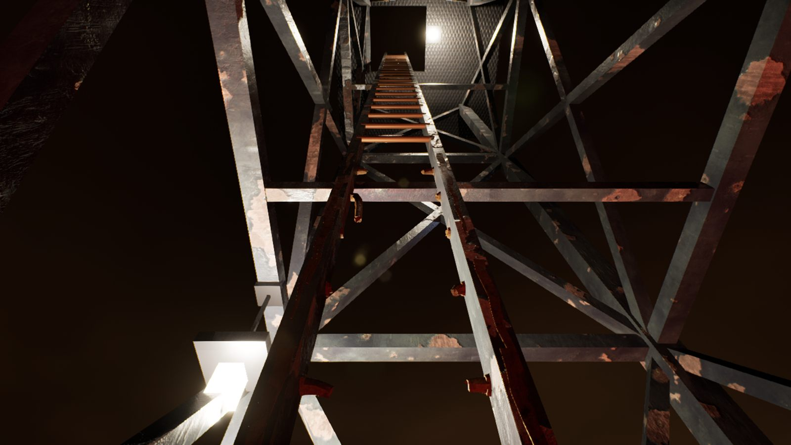
The rusted-off gap from the rung below: jagged stubs, one rung hanging by an end, rust running down. 232 m, the top ladderThe fallen length of ladder on the antenna platform, bent where it landed. 214 m, the antenna platform
Thursday 29 October 2026
A scaffold kit
The first half of a new kind of climb: construction scaffolding. A whole scaffold can now be put together from a short description (how many bays, which levels, where the ladders go), out of real parts at real sizes: steel tubes and clamps, boards, toe boards, ladders through hatches in the decks, and debris netting, some of it torn.
You climb up the inside by the ladders, or out over the rail onto the frame itself, and back in by looking down at the boards and pushing up.
A loading point with its rail lying on the boards lets you lower yourself off the edge.
So far it stands on the test map; the real job on a scaffolded building comes next.
The test scaffold: tubes and clamps, boards, ladders, a fan over the street, torn netting. A test mapThe loading point under the floodlight, its rail lying on the boards. A test map
You can see how tired you are
The stamina bar no longer has to be the only way to know how much you have left: your body shows it. Nothing about the climbing itself changed, only how it looks and sounds.
Fresh, you hang steady. Working, you start to breathe, slow and deep. Tired, your hands shake and sag a little as you reach, the view sways and sinks lower, and the breaths come quicker. Spent, the hands shake hard, the view trembles, the edges of the screen go dark and the breathing turns ragged.
At a camp, one breath comes each time your strength fills past another tenth, calming as you recover.
A new assist, Stamina bar: as the job has it, always, or never. Turning the view's motion down on the options page also calms the tired sway.
Working: the hands steady enough, the view clear, the bar half full. Hanging from a ledge on a test mapSpent: the hands shake, the view has sunk lower and the edges have gone dark. Hanging from a ledge on a test map
An options page
Esc, then Settings, now opens a proper options page over the pause menu. Everything on it is kept between games.
Sound: the overall volume, plus effects (your hands and feet, the gear), dispatch's voice, and the city and weather, each on its own slider.
Controls: mouse and stick speed, and turning looking up and down the other way round.
The view: how wide you see, how much the view moves (the bob, the jolt on a catch, the shake when tired), and switches for motion blur, film grain and the dark corners. A dot or a cross in the middle, and bigger or smaller dispatch text.
Picture quality, vertical sync and a frame limit.
The assists moved onto this page as its last sections. It all works with a gamepad too: up and down between rows, left and right to move a slider.
The options page over the pause menu: sound, controls and the view, with the assists further down. A test map
Cars you can stand next to
With the street's fronts, windows and the night sky brought up, the parked cars were the plainest thing at street level: smooth shells with flat discs for wheels. Each one is now about seven times as detailed, built where you'd look from the kerb.
Real gaps round the doors, bonnet and boot, deeper wheel arches, and tyres with sidewalls and tread under their covers.
Wipers, door handles, mirrors, and the light bars set into dark frames.
The flying traffic got proper thruster ducts with glowing fans inside, intakes, landing feet and beacons, and each craft swaps to a simpler version as it flies off, so the far lanes cost what they did.
Near the street it costs about a millisecond a frame, mostly flying cars passing close.
The red hatchback from the kerb before: a smooth shell, flat discs for wheels. 0 m, the kerbAnd now: door gaps, a deep arch, a tyre with tread under its cover, a framed light bar. 0 m, the kerb
The saloon's nose before. 0 m, the pavementAnd now: the bonnet line, wipers, and the lamp in its frame. 0 m, the pavement
A real night sky: low cloud lit by the city
From the top of the mast the night looked like dusk: there was no sky at all, only the fog glowing brighter towards the horizon, and the far towers were black rods with dots of window. Now a heavy low cloud hangs over the city, glowing a dim orange from the city's lights and fading to dark overhead and away from it, with no bright band at the horizon.
The far towers catch that glow on their walls, so they read as buildings, and the tall ones have floodlit tops.
The street's roofs catch it too, so looking straight down from the mast the street no longer sits in a black hole, and its lamps and traffic still show through the haze.
Everything that sets the night's colours now lives in one place, ready for other times of night later.
Earlier the same evening the skyline's towers stopped casting shadows, which cut the game's video memory from about 7.5 GB to 4.2 GB at its worst spot, with no visible change. The new sky costs a fraction of a millisecond and no extra memory.
From the mast top before: no real sky, only the fog glowing like dusk, and the far towers black rods with lit windows. 240 m, the mast top, looking past the BANK towerAnd now: low cloud lit dim orange by the city, the far towers' walls catching the glow, floodlit tops on the tall ones. 240 m, the mast top, looking past the BANK tower
Looking straight down from the top: the street's roofs catch the glow, and its lamps and traffic show through the haze. 240 m, the mast top, looking down
Assists: one option for each hard part
A first set of assists, each its own switch and all off by default, so a player can smooth out just the part that's hard for them. Esc, then Assists, opens their page; every change saves at once.
Show holds in reach: the holds you could grab next get a faint bright edge.
Hints when stuck: stay stuck a while and the next part's light brightens; a while longer and dispatch tells you where to go ("Stuck? The way on is up and to your left, where the light is.").
Brighter route lights, click to grab and click to let go, a slower climbing pace, slower or no stamina drain, and less or no camera shake.
With every assist off, the climb plays exactly as before.
The first pipe on the street with the outline off. 1 m, the streetAnd with Show holds in reach on: the pipe in reach gets a bright edge. 1 m, the street
The climber's body shows what's possible
The second half of the route language: your own arms now hint at what you can do from where you hang, before you commit to it.
Push the stick lightly toward a hold you can reach and the hand that would move loosens and leans toward it.
Push where only a jump goes and the arm on that side stretches out, open-handed, toward the hold the jump would catch, and the view sinks a little, like you're gathering yourself.
Walk to an edge you can lower yourself off and look down: both hands reach out and down over the lip.
On the way down from the mast, both hands hold the rope, one above the other, the lower one feeding it.
It's all pose: nothing about the climb itself changed.
Looking down at an edge you can lower yourself off: both hands reach out over the lip. 46 m, the open-sided floorPushing toward a pipe too far to reach: the arm stretches out for it, a jump away. 80 m, the plant room's pipesRoping down from the mast, the hand closed round the line. 221 m, the mast
The way up reads the same way everywhere
Watching my 6-year-old play showed where the way up got lost: climbs that start by lowering off a ledge, sideways jumps nobody saw as a choice, and the spot past the chiller. Now every part of the climb shows the way with the same few cues, all from the world itself (light and wear, no paint or arrows).
The first hold of each part of the climb is lit and chalked: 49 of them, 15 with a new lamp hung from a ceiling or a steel arm.
Chalk only where people actually climb: holds off the line are clean, and long ledges are chalked only where the hands go.
Where you lower off a ledge, its lip is worn (chalk smudges, boot scuffs) and there's a gap in the railing where people go over, with the hold below catching light.
Every jump lands on something sturdy (a pipe, a bracket, a ledge corner), lit and in plain sight from where you jump.
The climb starts from a dumpster under the shop canopy, under its own lamp, and dispatch names it: "up off the dumpster by the shop's back door."
No hold moved; the climb itself is unchanged.
The start: the dumpster under the shop canopy, lit by its own lamp, its lid chalked. 0 m, the streetWhere you lower off at the Sky Bar: a worn lip and a gap in the railing, the drainpipe you jump to lit beside it. The Sky Bar recessA jump across the back face: from one broken tray to the other, both lit and chalked. The back face, below the roof
The climbing tower gets wet and worn
The tower you climb had clean walls with nothing on them but the holds. Now it looks like a building people live in and maintain: dark wet streaks and rust run down from everything that drips (ledges, sills, grilles, the AC units), grime gathers at the foot of each wall, and the walls carry the building's own hardware.
Meter cabinets and fuse boxes with worn danger signs, cable runs and junction boxes, a gas pipe, a downpipe, a kitchen extract over the shop and a duct up past the Sky Bar.
Seven caged AC units, each with its drip down the wall.
None of it is anything to grab: every piece is kept clear of the holds and has no collision, and each sits in an existing pool of lamp light, since hardware out in the dark didn't read at all.
No hold moved; the climb itself is unchanged.
A fuse box, its cable and a worn danger sign on the corrugated wall behind the top block, the city behind. 180 m, the back terraceA caged AC unit by a window on the podium, its drip down the plaster, the street below. 13 m, the podium face
Real buildings round the climb: estates, lit roofs, a container yard and airliners
The skyline round the climb was all plain box towers. Now real buildings stand among them: seven housing estates of Soviet panel blocks and apartment blocks from the bought packs, recorded once from the packs' own layouts and rebuilt piece by piece.
78 roof lamps over stair doors and plant, so roofs read at night instead of being black holes.
A container yard below the mast, with two gantry cranes and their warning lights, and 180 containers stacked 1 to 4 high.
Two airliners crossing high over the city with their nav lights and strobes.
A housing estate between the towers: panel blocks with lit flats and balconies. About 60 m up, over the near cityThe container yard below the mast: two lit gantry cranes over the stacks. From above the yard
Rooms behind the lit windows
A lit window on any tower used to be a flat glowing rectangle. Now each one shows a room behind the glass, walls, floor, a lamp, furniture, curtains or blinds and now and then a figure, and it shifts as you move, the way a real room would. It covers the street's blocks and all 600-odd towers round the climb, at no measurable cost to the frame rate.
A lit window on the clinic block, a room with its floor and walls behind the glass. 64 m, the setback terrace
The street's buildings get real fronts
The street's buildings were flat boxes with a texture and strips of windows, standing beside cars built to a much higher bar. Now every street face wears precast concrete panels from the bought Soviet-block pack, laid out the way that pack lays out its own blocks: real window frames, glazed balconies stacked the way people glaze them in, and a row of vents along the top.
Each shop has a front door with a concrete canopy and a caged lamp, meter boxes beside it, bin bags and graffiti, and kitchen ducts over the noodle and ramen bars.
Downpipes run down the walls, the AC units hang on the panels, and leak streaks and grime run down them.
Granite kerbs, a gutter and drain gratings line the road, and puddles lie on the pavement.
Behind the shop glass there's now a real room: shelves, a tiled floor and strip lights that shift as you walk past, instead of a flat picture.
A street block in its new panel front, over the noodle bar. 0 m, the street, looking upA shop with a room behind its glass, the new kerbs, and walkers in the rain. 0 m, the pavement
The far city: suburbs, freeways and a lighter haze
The distance looked like the world stopped: the city ended in a flat brown wall, with nothing past it, not even ground. Now the city carries on to the horizon.
An inner ring of dense blocks, then 60 suburbs out to about 3 km. Each is densest and tallest at its middle and ragged at its edge, and some have a cluster of towers.
Freeways join the suburbs, lit by sodium lamps with moving head and tail lights, and scattered lights dot the land between.
Dark ground out to the horizon, and a thinner haze, so far lights fade gradually instead of stopping.
The street smog stays lower, so the street shows again from the top of the tower.
Before: past the near towers, the world stops in a flat brown wall. 150.5 m, the crown terraceAfter: suburbs spread to the horizon in a light haze, joined by freeways. 150.5 m, the crown terrace
Before: the city fades into a wall of haze, and the mast is plain grey. 240 m, the top of the mastAfter: suburbs, district towers and freeways out to the horizon; the mast in rusted, wet steel. 240 m, the top of the mast
Before: the street is lost in the smog. 240 m, looking straight downAfter: the street's lights and traffic show through the smog again. 240 m, looking straight down
A far suburb from the air: its street lights, its homes, and a freeway leaving it. About 3 km out, from an aircraft
The street's glow toned down
The haze round the shop lights and street lamps was too heavy. The shop lights and the sodium lamps now light up the fog less, and the glow round bright lights is smaller, so the street keeps its mood without the fuzz.
Before: heavy fog glow round the shop lights and lamps. 0 m, the streetAfter: a lighter glow, with the new cars, washing lines and AC units. 0 m, the street
The first pieces from the bought asset packs
Eight asset packs were bought on Fab. They're huge and dry, and the game can't use them as they come. Now a tool copies just the pieces the game uses into the project, shrinks their textures to a tenth of their size, and dresses them in the game's own wet, grimy material, so they match the rain.
First use: the water tanks on 274 skyline roofs are real rooftop tanks instead of a cylinder on a box.
Found on the way: the skyline's roofs get no light at night, so anything up there needs a lamp to be seen. That's now part of the next pass.
A rooftop water tank from the packs, lit by a test lamp. A skyline roof, about 130 m up
Models from Blender: cars, flying traffic and wall clutter
The blocky cars, flying traffic, AC units and washing lines were boxes built in code. Now they're real models made in Blender, at real-world size, with materials that sit in the rain: wet paint with a clear coat, road grime, beaded glass, rusty AC casings, damp washing.
Parked cars and the flying traffic got rounded, near-future bodies and lights that read at night.
Wall AC units, some in cages, and washing lines strung across the street.
A lamp and a bin by the roof door.
Washing lines strung across the street, and a caged AC unit on the wall behind. 0 m, the street, looking upA wall AC unit up close: casing, grille, bracket and rust. The street's walls
Wednesday 28 October 2026
Another dark tower, and a city past the edge
Two blocks east, a second tower now stands dark, its mast light out and drones circling its top. When you relight HELIX, dispatch notices: "…huh. Board's showing another one dark."
The city used to stop just past the near towers. Now thousands of simple blocks carry on out to 2 km, fading into the haze, with sparse, mostly warm window light in clusters, and the sky dark overhead with the smog glowing below.
Window light everywhere now comes from one realistic set of colours, mostly warm, some white, a few cool, with no green or pink.
Past the near towers, the far city now carries on into the haze. 150.5 m, the crown terrace
Real surfaces on the street and podium walls
The street's buildings and the podium were flat colour with painted-on windows. Now they're photographed surfaces: brick and stained concrete on the street, and peeling plaster over concrete panels on the podium, with grime near the pavement. The pattern fades out with distance so far walls don't look like prints. The rest of the tower followed the next day.
Before: the podium as smooth, flat walls. 0 m, the street, looking up at the podiumAfter: peeling plaster and stained concrete, wet in the rain. 0 m, the street, looking up at the podium
Footsteps, camps you feel, rain that stops under cover, and falling
A day of sound and small moments.
Footsteps by surface: concrete, metal, grating, wet pavement.
Arriving at a camp shows its name (Podium roof, Mast rest...), and if you're tired, a breath out, the weather easing for a moment and a soft tick each time the bar fills another tenth.
Rain stops under roofs, the lift car and overhangs, but not under railings or cables.
A sound mix: the weather dips while dispatch talks, the wind drops under cover, and recesses, rooms and the inside of the mast echo.
Falling is one sequence: the wind rises as you fall, the landing cuts to black, then the message. Not listened to by hand yet.
Lamps that lead the eye up the whole tower
The route lighting from the podium and sky garden went on up the tower: one to three work lamps per stretch, hung where the building would have them and aimed at the next holds. The cracked corner stones, the bar's recess, the sign's ladder, the grey pipe, the broken ladder and the gap in the mast's ladder are all lit now.
Fixes from my notes: police craft keep a steady red and blue flash, the smoker's cigarette stays in the hand that rises, the lunge sounds fuller (a cloth pat, a swish and a short breath), and wet holds look wet, darker and glassier with beads of water underneath.
Before: the cracked corner stones half in the dark. 96 m, the terrace below the Sky BarAfter: lamps on the corner light the stones all the way up. 96 m, the terrace below the Sky Bar
The brightest things toned down
Lit walls and signs were blowing out to white. Now only real lights glow, lit walls hold their detail, and the backs of the HELIX letters on the podium no longer glow: they're dark metal on a steel frame. On the podium roof, the share of the picture blown out to white went from about 9% to almost nothing.
Before: the backs of the HELIX letters glow as a white slab over the podium roof. 24 m, the podium roofAfter: dark metal backs, and the street below still bright. 24 m, the podium roof
Tuesday 27 October 2026
Steam that looks dangerous before it hits you
Steam "looks harmless until it hits you", I said. Now the vents warn you: a seeping wisp and a shimmer of heat at rest, faster spitting and a rattling pipe before the blast, then a dense, fast jet. A wet, crusted streak on the wall marks how far it reaches. The timing and the danger are the same as before.
Before: the blast as a few soft puffs. The test map's steam ventAfter: a dense jet, with the wet streak on the wall behind it. The test map's steam vent
People that read as people
I saw the walkers' umbrellas floating beside them (twice), and wondered how the two people on the podium roof got there. A rule came out of it: people need a visible reason to be where they are.
Walkers hold their umbrellas up in a fist, and wear coats, trousers, shoes and hair instead of shiny mannequin skin.
The two on the podium roof lean on the railing by a stair door with a smokers' bin and a lamp: one smoking, one on the phone.
The figures in lit windows got shoulders and soft edges.
Before: a mannequin with the umbrella floating beside it. 0 m, the pavementAfter: the umbrella held in a fist, and real clothes. 0 m, the pavement
Before: a mannequin standing at the podium roof's railing. 24 m, the podium roofAfter: leaning on the railing, out for a smoke. 24 m, the podium roof
Playtesting by hand, and the first round of fixes
The first playtests by hand. With playtest mode on, questions to answer show as numbered signs where they apply, and a note box takes good, not quite or skip, with a screenshot of the moment.
Easy hold (a click grabs, the next lets go, stamina stays full), messages that stay up, and the keys listed down the side, all of which I asked for.
From the first notes: bigger dispatch text, quieter grips (the pipe's "dink" should be half as loud; later, bare hands on a pipe shouldn't ring at all), bigger camera kicks on catches and lunges, a pause menu, Tab for dispatch's last few lines, and camps that catch you wherever you step onto their floor.
The frame rate felt choppy at the top of the mast. Measured properly, it holds about 100 frames a second everywhere.
Playtest mode on the street: numbered signs in the fog and the keys listed down the side. 0 m, the streetThe note box, for writing down what a playtest found. 0 m, the street
Arms and hands
The floating gloves became real arms in a jacket with a hi-vis cuff, reaching for each hold, closing round it and opening as they let go.
The first playtest notes: the arms gripped the upright pipe "the opposite of what you'd expect", and looking down while climbing looked awkward. Now each hand holds a pipe like a pole from its own side, thumb across the front, and nothing odd shows when you look down.
The before shot is my own screenshot from that playtest, with a washed-out look that was fixed that evening.
Both hands on a rail. The test map
Before: the hand wraps the downpipe the wrong way round. 11 m, the podium's downpipeAfter: held like a pole, from its own side. 11 m, the podium's downpipe
Reading the route without signposts
I found the sky garden "all a bit indeterminate": hard to tell where to go. The fix had to stay in the world, with no paint, arrows or outlines.
Holds within reach of your hands pick up a faint sheen while you hang.
More chalk from the last tech, paler stone ledges against darker walls, and wet metal that catches the lamps.
Work lamps hung where the building would have them, aimed at the next holds, and lit rooms behind the route.
Before (left) and after (right): work lamps and a lit window lead the eye up the podium. 0 m, the street, looking up at the podium
A city round the tower
The prototype's city came across too: about 600 towers with lit windows, blinking red mast lights, neon names of hotels, hospitals and banks, skywalks, gas flares and flying traffic.
Two people at the podium roof's railing, and figures in some of the street's lit windows.
Mouse and stick turning matched to the prototype. I found both fine, but the gamepad's inverted look shouldn't be the default, so it isn't.
That evening: the giant adverts got backlit pictures and five layouts (I had noticed they all looked the same), emergency craft flash on their own beat again, and the lunge plays a jacket's swish instead of a whoosh that didn't fit.
The city from the crown: neon names, warning lights and traffic between the towers. 150.5 m, the crown terraceFigures standing in the lit windows over the street. 0 m, the street, looking up
The upper tower and the mast: street to cab
The rest of the tower was built by lunchtime, so the whole job could be climbed from the street to the cab.
The HELIX sign (114 to 150.5 m): lunging tube to tube up the giant letters, with a ledge to rest on halfway.
The back face (150.5 to 178 m): round the crown on the window-cleaning machine's rail, into its parked cradle, up a rusted drainpipe.
The roof (178 to 200 m): a torn ladder, cable trays and a pole up to a railed roof with red warning lights.
The mast (200 to 240 m): a ladder up the inside of the lattice, a torn-out flight you get round on the bracing, rusted-off rungs, and the hatch onto the beacon platform.
The game also runs as a standalone build, outside the editor.
One of the giant HELIX letters up close: a lit tube to catch, and the dead ones round it. 114 to 150 m, the HELIX signThe window-cleaning cradle parked on the back face, a camp hanging over the city. 165.5 m, the cradleThe mast, its platforms and red lights, above the city. 200 to 240 m, the mast
The lower tower: sky garden, plant floors and the Sky Bar
The tower was built a section at a time, each one climbing just like the prototype's.
The sky garden (24 to 64 m): up the slats behind the HELIX letters, onto the metal strips between the glass, into the open-sided floor with the lift, then a window-cleaning gondola and its cable.
The plant floors (64 to 96 m): a steel frame holding chiller units, with an exhaust that blasts every few seconds, then two conduits, a recess and a wet ladder.
The Sky Bar (96 to 114 m): cracked stone blocks up the corner, most crumbling as you hold them, rainwater pipes, and a bar shut for years, its chairs up on the tables and its pink sign still lit.
The way up from the podium roof: the slats behind the letters, under a work lamp. 24 m, the podium roof, looking upThe open-sided floor and the Sky Garden lift, waiting with its green light. 46 m, the open-sided floorThe view from the terrace above the plant floors. 96 m, the terraceThe shut Sky Bar's terrace: glass railings, dead festoon lights, the pink sign. 114 m, the Sky Bar terrace
The job: the dark beacon, the drones, the rope and the cab
The job layer came across the same morning: the dispatcher's radio and lines, the dark beacon closing the airspace, the drone rings, the lightning, the rope down and the cab home.
Relight the beacon and the drones switch off and lift away, and the traffic eases back over the tower.
The radio's lines type out bottom left over a garbled police-radio voice.
Later that afternoon, after a playtest: the rope used to run straight through you and through the mast and the cab. Now it hangs in front of you, and you swing in over the roof railing at the bottom.
From the street: the tower, with rings of red drones round its top closing the airspace. 0 m, the street, looking upThe beacon relit, and dispatch saying the airspace is open again. 240 m, the beacon platformThe cab waiting at the roof railing by the mast. About 200 m, the roof
The climbing rebuilt in Unreal
Everything the prototype's climber did came across overnight and next morning, working the same way.
Every kind of hold: ledges, pipes, brackets, cables, rope anchors, neon tubes (lit and dead), crumbling and wet holds.
The steam vent, the Sky Garden lift with its buttons and gates, and camps that only ever move you forwards.
The screen: a small crosshair that turns orange when a grab would take, the stamina bar, your height, hints, and the death message with Jump to try again from the last camp.
Camera weight on every catch, landing and lunge, a tremble when you're tired, and real recorded sounds instead of the prototype's made-up ones: grips by surface, landings, scrapes, wind that builds with height, the city's hum, and rain from 36 m up. My verdict on the sounds and the radio: "fine for now."
The kinds of hold on a test wall: pipes, a rope anchor, ledges, neon tubes lit and dead. The test map
Monday 26 October 2026
The move to Unreal
The game moved from Godot to Unreal in one evening. Two quick tests decided it: the street rebuilt at night, and the podium climbed again with the same holds. The climb carried over almost exactly, and Unreal looked far better out of the box: wet roads that properly reflect the shop signs, coloured neon light on the walls and the fog, and the tower fading up into the smog.
The levels are still generated rather than built by hand, so the whole street and tower can be rebuilt in about 20 seconds.
The first street in Unreal: wet road, shop signs, umbrellas and the HELIX tower ahead. 0 m, the streetThe podium wall from the street, lit for the first test climb. 0 m, the street, looking up
The Spire: a real tower, and a reason to climb
The gym's small blocks felt "very game-y", so the climbing moved to a level at real-world scale: a street of shops at night, and HELIX's tower rising 240 m above it, climbed from the pavement. Its sections were built in parallel and joined up, from the podium to a steel lattice mast.
Camps: stamina only comes back where you choose to stop and stand. I wanted recovery slower than at first, but still clearly better than resting anywhere else.
The Sky Garden lift, a rickety goods lift you can ride past part of the climb. I liked it: "it sounds appropriately rickety."
Then the story: you're a beacon tech relighting aircraft-warning beacons on a run of jobs, talked through each one by a dispatcher on a crackly radio. A dark beacon closes the airspace round its tower, with rings of red marker drones showing the no-fly zone. At the top you relight it, rope down to the roof, and a flying cab picks you up.
Climbing slowed by about 30% after I found it too fast.
That evening the game moved to Unreal, and this version was frozen as the reference the port copies from.
The street at the foot of the Spire: shop signs, lit windows, and the HELIX tower lost in the dark above. 0 m, the streetFrom the crown: the dark tower's ring of red marker drones closing the airspace, over a rainy pixel city. 150.5 m, the crown terraceThe beacon platform at the top of the mast, in the rain. 240 m, the top of the mast
Sunday 25 October 2026
Going bigger: the Ascent, and a pixel look
The next step was mine: "go bigger." One long climb that used every mechanic, with lots of height. The Ascent grew to 84 m, through tenement walls, a pipe gallery and a building you climb through on the inside.
Holds became parts of buildings instead of pegs on a wall: stone sills, window cages, clamped pipes, step irons, corner stones, broken window frames. Chalk from earlier climbers marks the way.
The first steam vents: a pipe that hisses, then blasts across the route and knocks you off.
A darker world where every lamp hangs from something, rain, and a city of a few hundred towers round the climb.
A chunky-pixel look with a dithered palette was tried as the art direction. It was left behind in the move to Unreal.
The Ascent's face from mid-climb: lit windows, sills and pipes, the city in chunky pixels round it. About 30 m up the AscentLooking down the Ascent past the corner stones, with rain and the pixel city below. 48 m up the Ascent, looking down
Saturday 24 October 2026
The first prototype: a climbing gym, hold by hold
The game started as a quick prototype in Godot: a first-person climber in a climbing gym. Each grey test tower was built around one problem: a long wall, gaps to jump, a chimney, crumbling plaster, a drop, girders, and a puzzle sequence.
The first version let you climb any rough wall. It felt like a "Spider-Man simulator", so it went the same evening.
In its place came hold-based climbing: you hang from two hands and move one reach at a time, only onto things you can actually grip (ledges, pipes, brackets). The verdict: "this is it… more mechanical in a good way."
Stamina drains with every reach and slowly while you hang. The first playtest found the gaps, the chimney and the crumbling wall impossible, so stamina was rebalanced and leap targets were hung lower.
Simple floating gloves, camera weight on catches, and grip sounds by surface.
The Holds station: wooden ledges and a pipe on a grey test wall, and the floating gloves. The Holds station, the climbing gymThe Sequence station, the puzzle climb: a pipe, a recess and a row of sills up a test tower in the fog. The Sequence station, the climbing gym